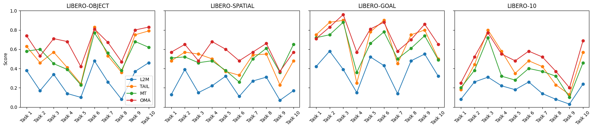
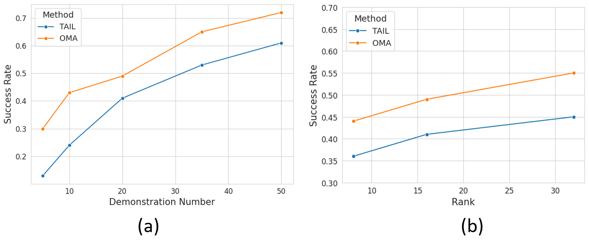
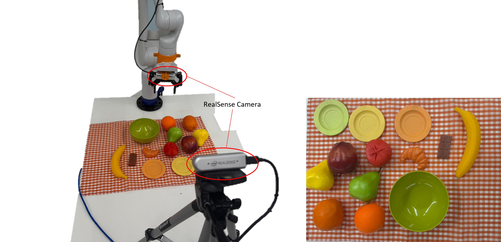
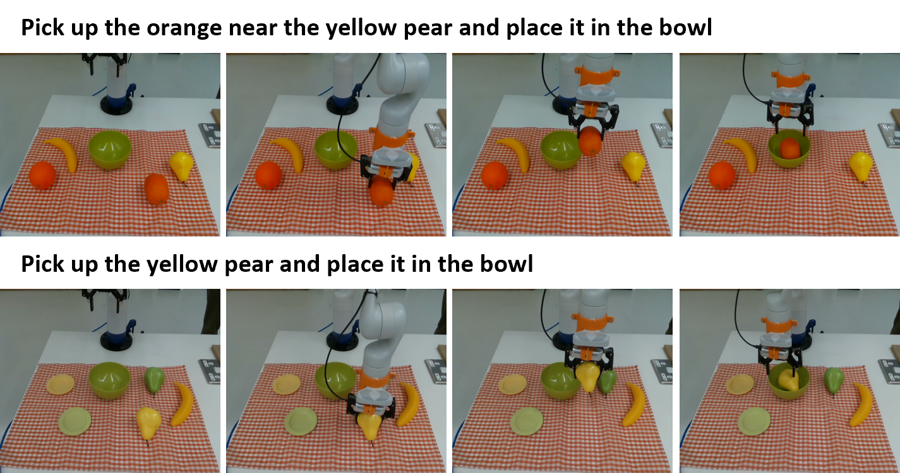

Continual adaptation is essential for general autonomous agents. For example, a household robot pretrained with a repertoire of skills must still learn and adapt to unseen tasks specific to each household. However, prior works mainly emphasize either effective pretraining of models for decision-making or single-task adaptation. Recognizing this, building upon parameter-efficient fine-tuning in language models, recent works have explored lightweight adapters to adapt pretrained policies, which can preserve learned features from the pretraining phase and demonstrate good adaptation performances. However, these approaches treat task learning separately and overlook the underlying relationships between new tasks and prior tasks, limiting the knowledge transfer. In this paper, we propose Online Meta-Adapters (OMA) for continual imitation learning. Rather than applying adapters directly, OMA employs a meta-learning objective to capture transferable priors from prior tasks, thereby accelerating adaptation to new tasks. Extensive experiments in both simulated and real-world environments demonstrate that OMA can lead to better adaptation performances compared to the baseline methods.
OMA is evaluated on LIBERO continual adaptation suites and real-robot tasks with 20 demonstrations. Across simulation, OMA consistently outperforms adapter-based baselines including L2M, TAIL, and a multi-task adapter baseline. The experiments also show that OMA remains effective across different demonstration counts, LoRA ranks, and policy architectures.


The real-world experiments use a Kinova robotic arm with two RealSense RGB-D camera views. The policy is pretrained on five tasks and then continually adapted to five new tasks, testing whether OMA can transfer reusable manipulation knowledge under controlled distribution shifts.


| Method | 20 demos | 40 demos |
|---|---|---|
| OMA | 38.0% | 70.0% |
| TAIL | 32.0% | 58.0% |